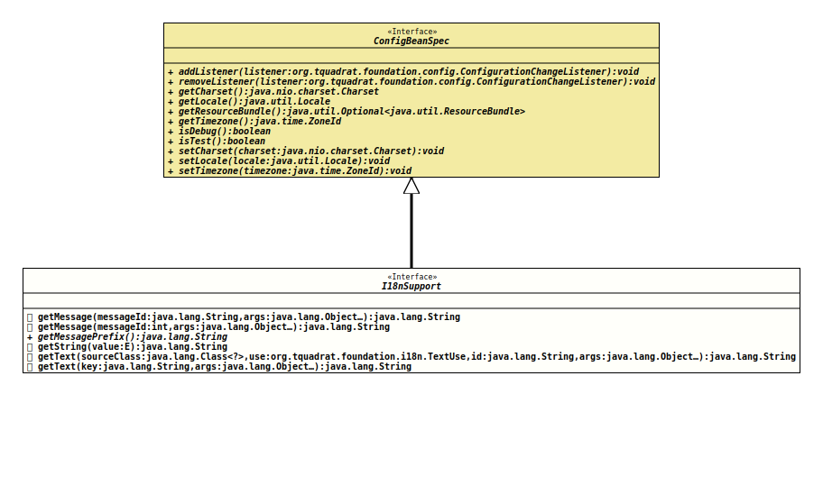

- All Superinterfaces:
ConfigBeanSpec
@ClassVersion(sourceVersion="$Id: I18nSupport.java 999 2022-01-27 23:23:26Z tquadrat $")
@API(status=STABLE,
since="0.0.2")
public interface I18nSupport
extends ConfigBeanSpec
A configuration bean specification has to extend this interface in order to get the i18n support.
The extending bean needs to provide two String constants:
- The base bundle name, marked with the annotation
@BaseBundleName - The message prefix, marked with the annotation
@MessagePrefix
If the annotation processor cannot find these annotations in the configuration bean specification, it will throw an error. This behaviour is different from that when the i18n support is used independent from a configuration bean.
When the methods
TODO ??- Note:
-
- The configuration bean specification may not define a setter for the resource bundle property if it extends this interface!
- Author:
- Thomas Thrien (thomas.thrien@tquadrat.org)
- Version:
- $Id: I18nSupport.java 999 2022-01-27 23:23:26Z tquadrat $
- Since:
- 0.0.2
- UML Diagram
-

UML Diagram for "org.tquadrat.foundation.config.I18nSupport"
{kind=link}
-
Method Summary
Modifier and TypeMethodDescriptiondefault StringgetMessage(int messageId, Object... args) Returns the message for the given message id.default StringgetMessage(String messageId, Object... args) Returns the message for the given message id.Returns the message prefix.getString(E value) Returns the String representation for the givenenum.default StringReturns the text for the key that will be composed of the given components.default StringReturns the text for the given key.Methods inherited from interface org.tquadrat.foundation.config.ConfigBeanSpec
addListener, getCharset, getLocale, getResourceBundle, getTimezone, isDebug, isTest, removeListener, setCharset, setLocale, setTimezone
-
Method Details
-
getMessage
Returns the message for the given message id.- Parameters:
messageId- The message id.args- The message arguments.- Returns:
- The message.
-
getMessage
Returns the message for the given message id.- Parameters:
messageId- The message id.args- The message arguments.- Returns:
- The message.
-
getMessagePrefix
Returns the message prefix.- Returns:
- The message prefix.
- See Also:
-
getString
Returns the String representation for the givenenum.- Type Parameters:
E- The type of theenumvalue.- Parameters:
value- The enum value.- Returns:
- The String representation.
-
getText
Returns the text for the key that will be composed of the given components.- Parameters:
sourceClass- The class that defines the text.use- The text use.id- The id for the text.args- The text arguments.- Returns:
- The text.
- See Also:
-
getText
Returns the text for the given key.- Parameters:
key- The resource bundle key for the text.args- The text arguments.- Returns:
- The text.
-